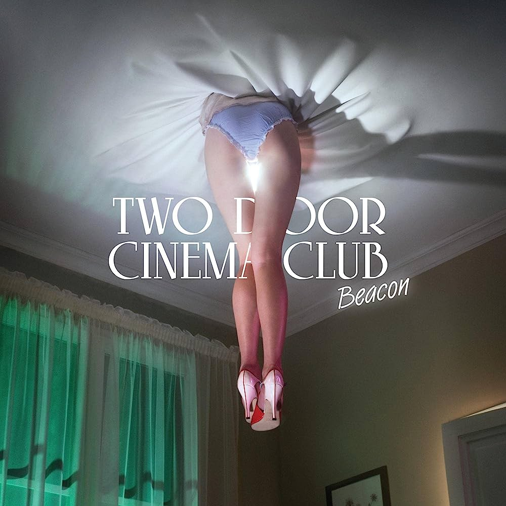
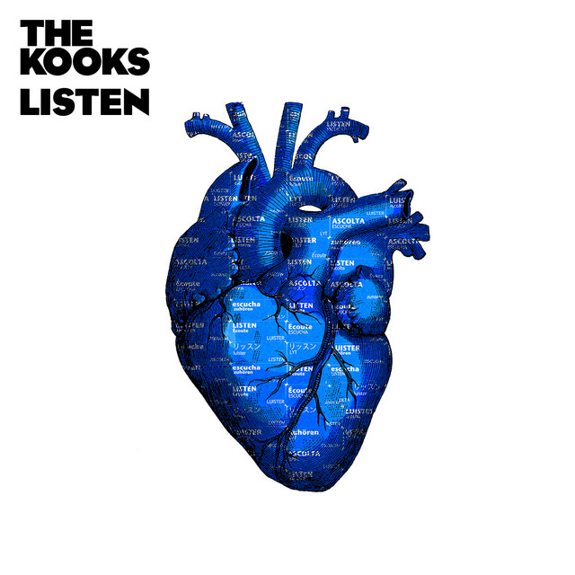
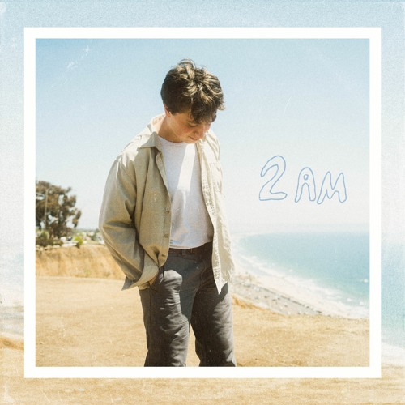

Para tener energía
Haz click sobre la imagen para entrar al álbum en Spotify.

Álbum: Beacon
Artista: Two Door Cinema
"Beacon" de Two Door Cinema Club es un álbum enérgico y contagioso que combina melodías indie pop pegajosas con letras introspectivas, creando una experiencia auditiva llena de vitalidad y reflexión.

Álbum: Never Been Better
Artista: Olly Murs
"Never Been Better" de Olly Murs es un álbum pop optimista y enérgico que combina melodías pegajosas con letras edificantes, transmitiendo un mensaje de alegría y confianza en sí mismo.

Álbum: Listen
Artista: The Kooks
"Listen" de The Kooks es un álbum dinámico y fresco que muestra la evolución de la banda, explorando nuevos estilos musicales mientras mantienen su esencia indie rock y letras introspectivas.

Álbum: My Type EP
Artista: Saint Motel
"My Type EP" de Saint Motel es una explosión de ritmos pegajosos y melodías vibrantes que capturan la esencia del indie pop, con letras ingeniosas y contagiosa energía.

Álbum: Quiet Ferocity
Artista: The Jungle Giants
"Quiet Ferocity" de The Jungle Giants es un álbum enérgico y enérgico que combina guitarras vibrantes con melodías adictivas, ofreciendo una mezcla fresca y enérgica de indie rock y pop alternativo.

Álbum: Girl, Say
Artista: Vacation Manor
"Girl, Say" de Vacation Manor es un álbum lleno de armonías exquisitas y letras emotivas, que transporta al oyente a un viaje musical introspectivo y reconfortante.

Álbum: The Heights
Artista: Knox Hamilton
"The Heights" de Knox Hamilton es un álbum lleno de melodías radiantes y letras optimistas que capturan la esencia del pop indie con una mezcla de frescura y positividad.
Álbum: Castlecomer
Artista: Castlecomer
"Castlecomer" de Castlecomer es un álbum enérgico y contagioso que combina guitarras vibrantes y estribillos pegadizos, creando una experiencia de rock indie llena de diversión y energía.

Álbum: 2 AM
Artista: Landon Conrath
"2 AM" de Landon Conrath es un álbum íntimo y emotivo que captura las emociones nocturnas a través de melodías acústicas y letras sinceras, transportando al oyente a un estado de reflexión introspectiva.